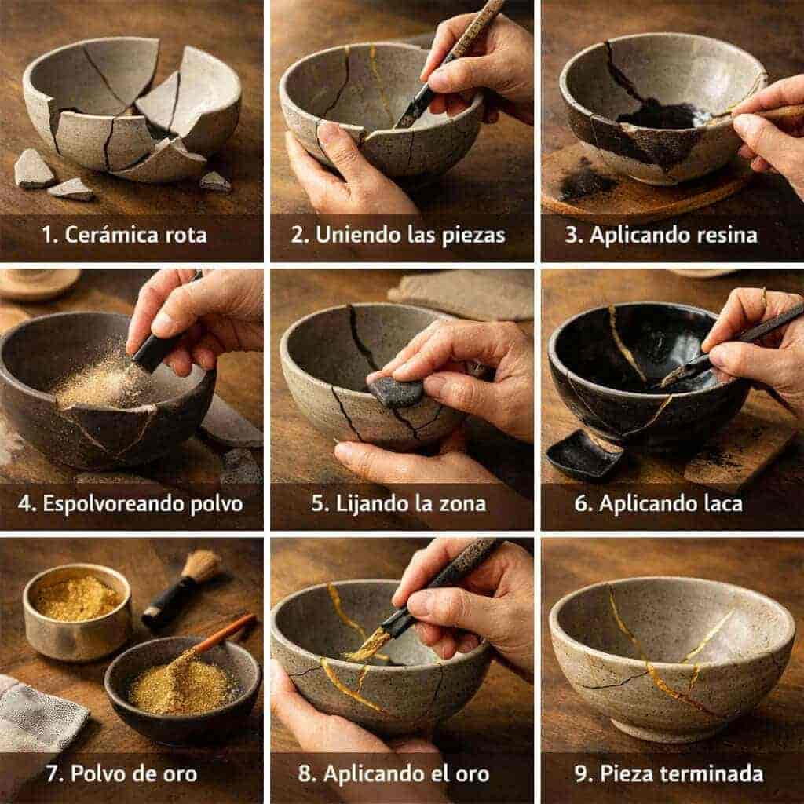
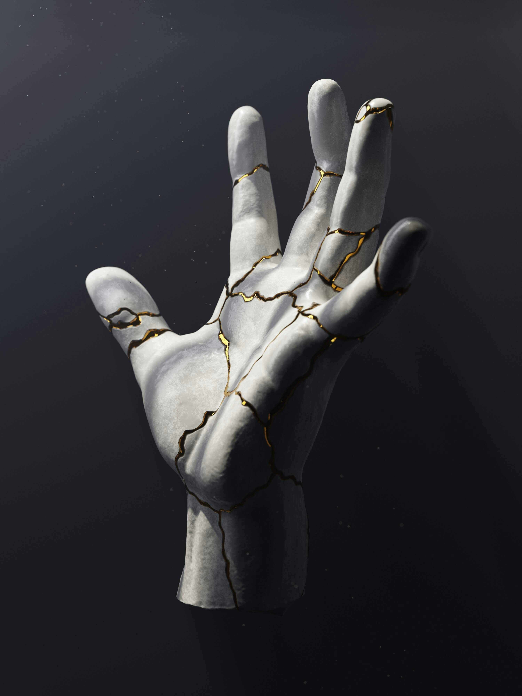
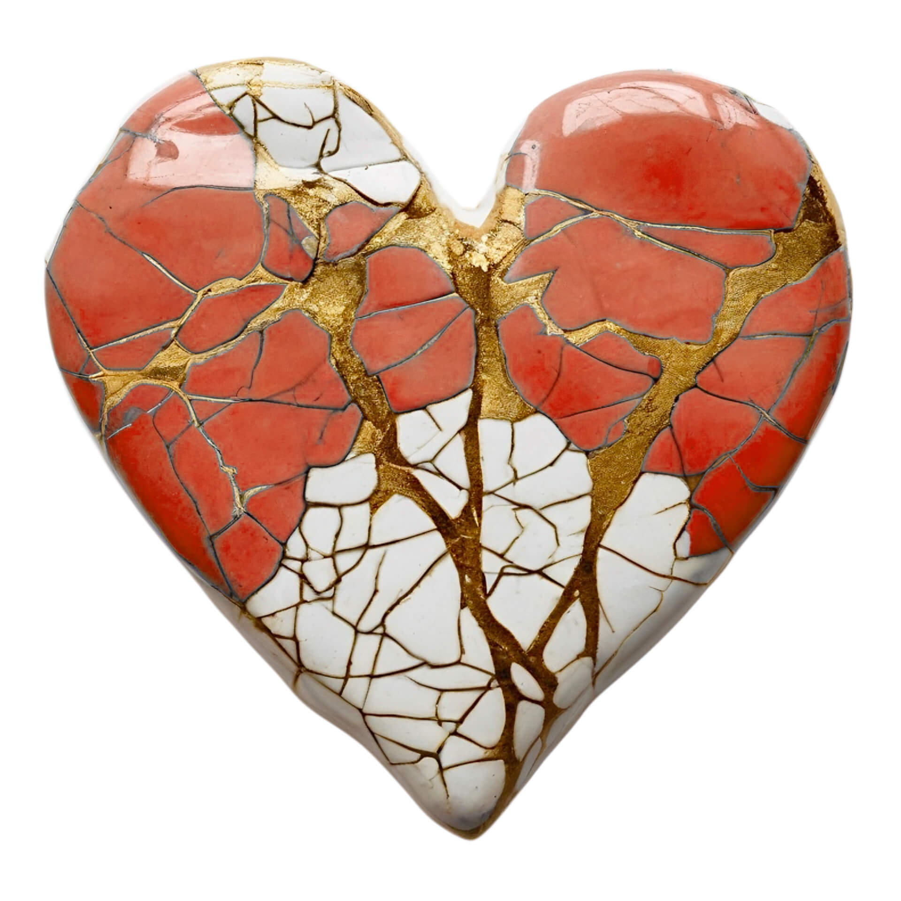
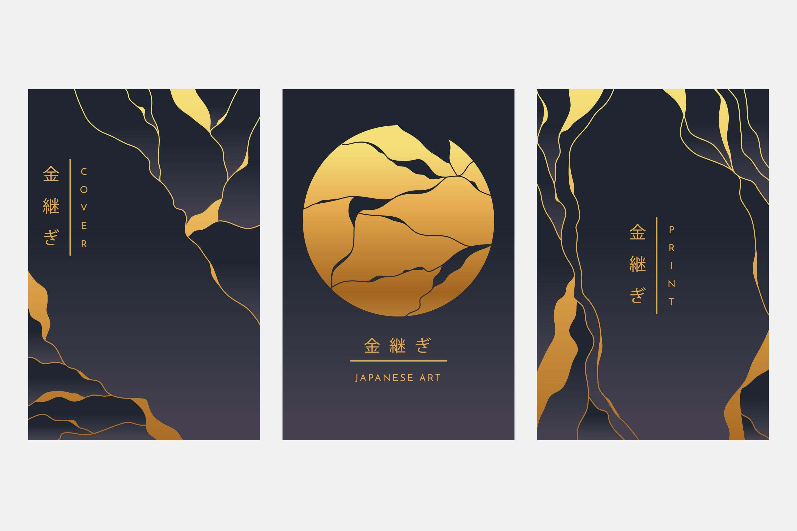
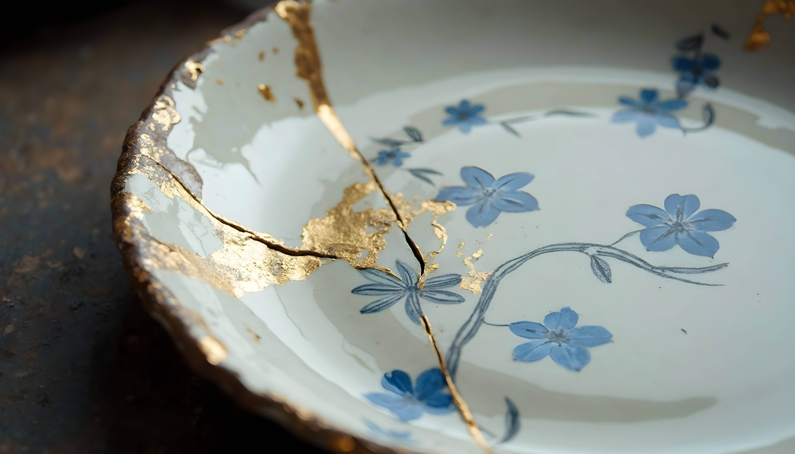

1. La Ruptura
Fase de Aceptación: Se limpian cuidadosamente los fragmentos. No se intenta ocultar el daño, sino entender la historia detrás de la rotura para preparar la reconstrucción.
El Kintsugi es el arte japonés de reparar cerámica rota utilizando oro, resaltando la belleza de las imperfecciones.
Fase de Aceptación: Se limpian cuidadosamente los fragmentos. No se intenta ocultar el daño, sino entender la historia detrás de la rotura para preparar la reconstrucción.
Fase de Ensamblaje: Los fragmentos se unen con resina Urushi. Este proceso requiere precisión y paciencia, permitiendo que la pieza recupere su forma original pero con nuevas líneas de vida.
Fase de Iluminación: Se aplica polvo de oro sobre la resina aún fresca. El resultado es una pieza más resistente y estéticamente superior a la original.

Fuente: Video educativo sobre el proceso de Kintsugi – University of Oxford (YouTube).




La técnica del Kintsugi trasciende la restauración técnica para convertirse en un manifiesto visual profundo sobre la resiliencia y la historia del objeto. En estas piezas observamos conceptos fundamentales: